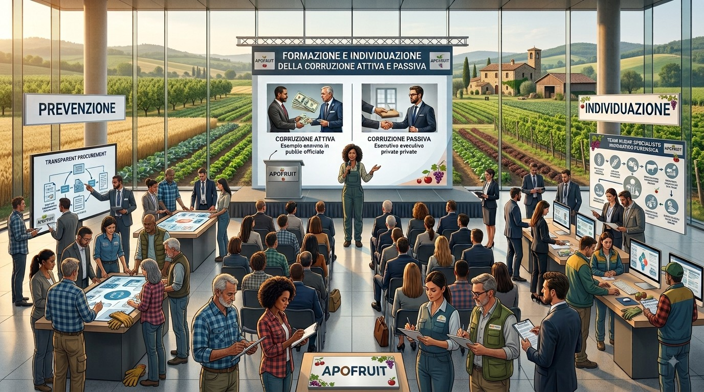

Prevenzione, formazione e individuazione della corruzione attiva e passiva
Apofruit promuove una cultura di legalità e trasparenza attraverso un modello organizzativo strutturato, un sistema di controllo rigoroso, canali protetti per le segnalazioni e un impegno costante nella formazione e comunicazione. L'obiettivo è coinvolgere tutti gli stakeholder, sia interni che esterni, nella prevenzione e nel contrasto di ogni forma di corruzione. Per garantire l’efficacia di tale impegno, l'Azienda adotta una struttura consolidata basata su tre strumenti principali:
Per garantire l’efficacia di tale impegno, l'Azienda adotta una struttura consolidata basata su tre strumenti principali:
- Il Codice Etico
- Il Modello di Organizzazione, Gestione e Controllo (MOG)
- La Procedura di Segnalazione di Condotte Illecite (Whistleblowing)
I Nostri Strumenti di Prevenzione
- Il Codice Etico: Vieta severamente offerte indebite a pubblici ufficiali, dirigenti della Pubblica Amministrazione e loro familiari, oltre a pratiche scorrette nelle gare pubbliche e nell’accesso a contributi pubblici. Nei rapporti privati, vieta di accettare favori che possano compromettere l’imparzialità e richiede ai fornitori il rigoroso rispetto del Codice, prevedendo eventuali clausole contrattuali sanzionatorie.
- Il Modello di Organizzazione, Gestione e Controllo (MOG): Adottato per prevenire la commissione di reati e garantire una gestione trasparente, si integra perfettamente con il Codice Etico e si applica a tutti coloro che operano o intrattengono rapporti con Apofruit. Il Modello mira a garantire la formalizzazione dei poteri, la segregazione funzionale, la chiarezza delle competenze e la trasparenza nelle decisioni aziendali. È supervisionato da un Organismo di Vigilanza (OdV) indipendente incaricato di monitorarne l'efficacia, e include "Parti Speciali" che affrontano in dettaglio i rischi legati a illeciti specifici, tra cui la corruzione, i reati societari, la falsità documentale e i reati informatici o ambientali. Le misure disciplinari previste per le violazioni sono calibrate sulla gravità dell'atto e possono arrivare, nei casi più gravi, alla risoluzione del rapporto di lavoro.
- La Procedura di Segnalazione di Condotte Illecite (Whistleblowing): Sistema di Whistleblowing (Procedura di segnalazione di condotte illecite): Consente a dipendenti, collaboratori, fornitori, soci e altre figure coinvolte di segnalare in modo riservato e protetto eventuali violazioni. Il sistema si appoggia a una piattaforma gestita da un organismo esterno qualificato, garantendo l'accessibilità anche a chi non frequenta abitualmente i luoghi di lavoro dell'Azienda.
Comunicazione e Formazione Continua
Per assicurare la massima diffusione dei principi aziendali, Apofruit investe fortemente nella comunicazione, rendendo il Codice Etico e il MOG accessibili a tutti i livelli dell’organizzazione (inclusi amministratori, dipendenti, soci e collaboratori) tramite la intranet aziendale e canali specifici.
Il programma formativo è strutturato in base ai ruoli e all'esposizione ai rischi:
- La formazione viene erogata con aggiornamenti periodici e in concomitanza con cambiamenti di funzione o modifiche normative.
- È prevista una formazione annuale in aula, della durata di un’ora, dedicata a tutti i dipendenti e finalizzata specificamente alla prevenzione della corruzione attiva e passiva.
- Annualmente, un fornitore esterno qualificato eroga aggiornamenti ciclici specifici per i Dirigenti e gli organi di Amministrazione e Controllo, garantendo il costante allineamento alle migliori pratiche in materia di etica e integrità.
Metriche e Obiettivi: I Risultati
A testimonianza della validità e dell'efficacia delle procedure adottate per contrastare gli illeciti:
- Nel 2024, Apofruit non ha avuto condanne per violazioni delle leggi contro la corruzione attiva e passiva.
- Nel 2024, non sono state inflitte ammende all'Azienda per violazioni delle leggi contro la corruzione attiva e passiva.